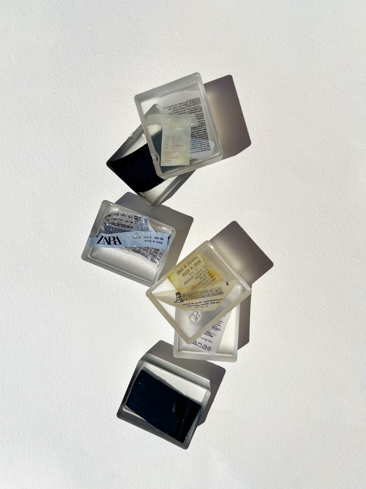
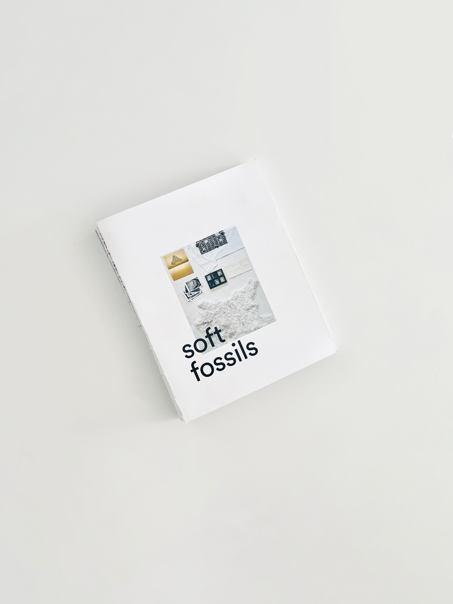
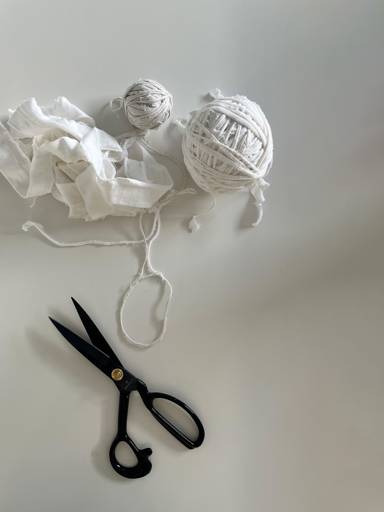
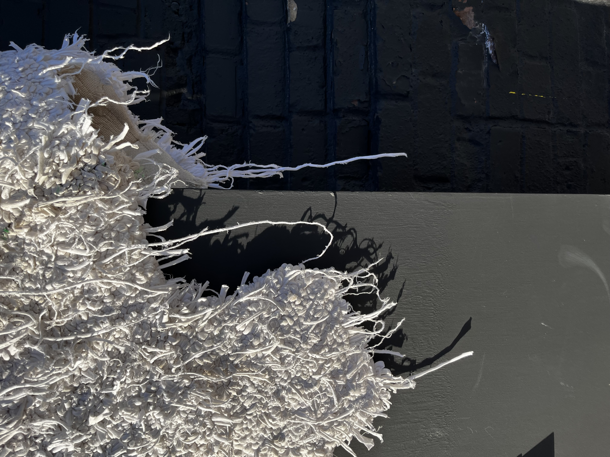
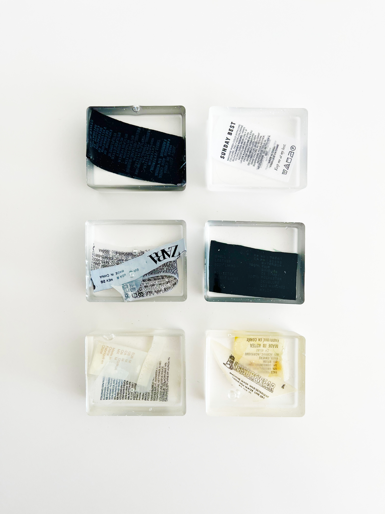
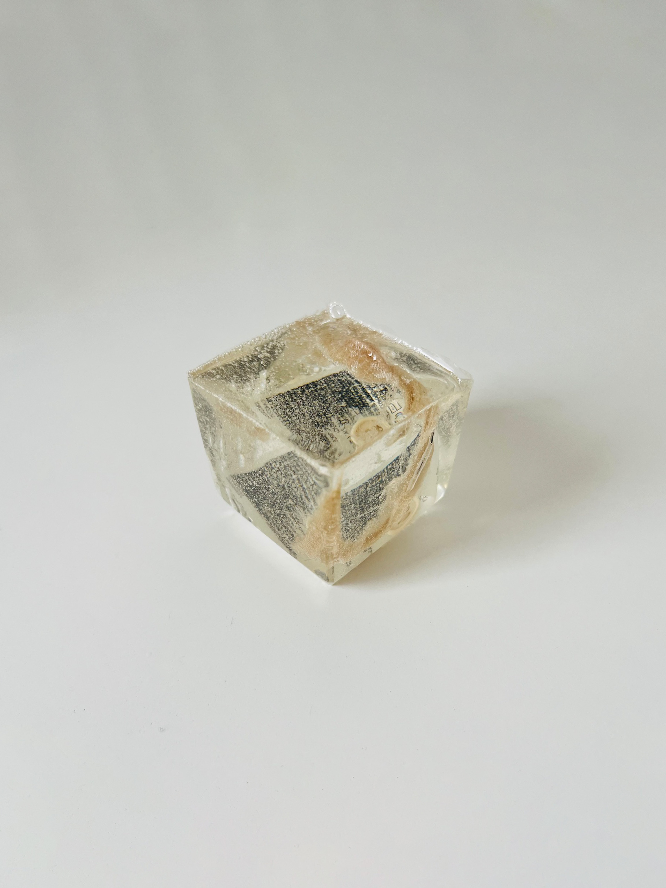
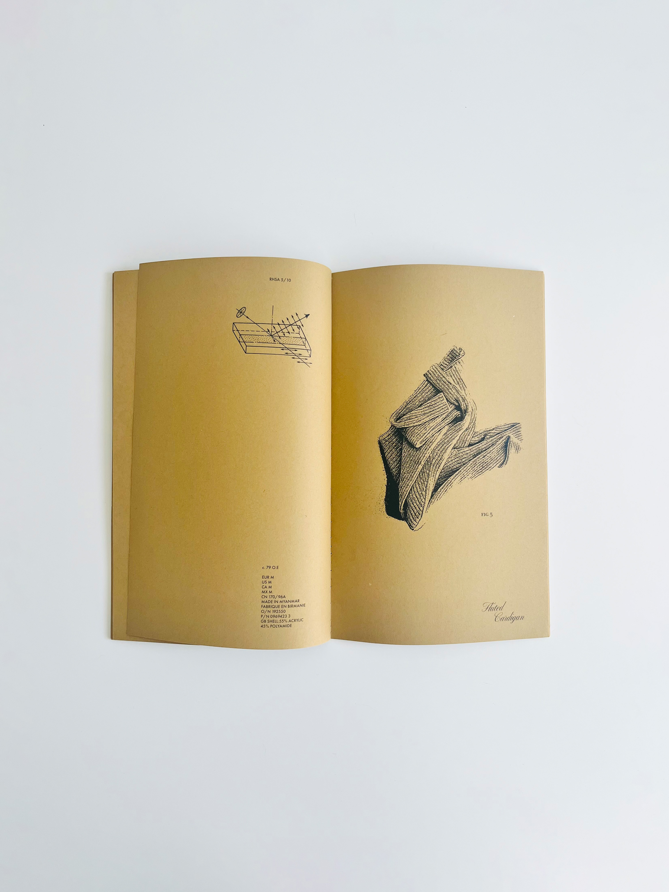
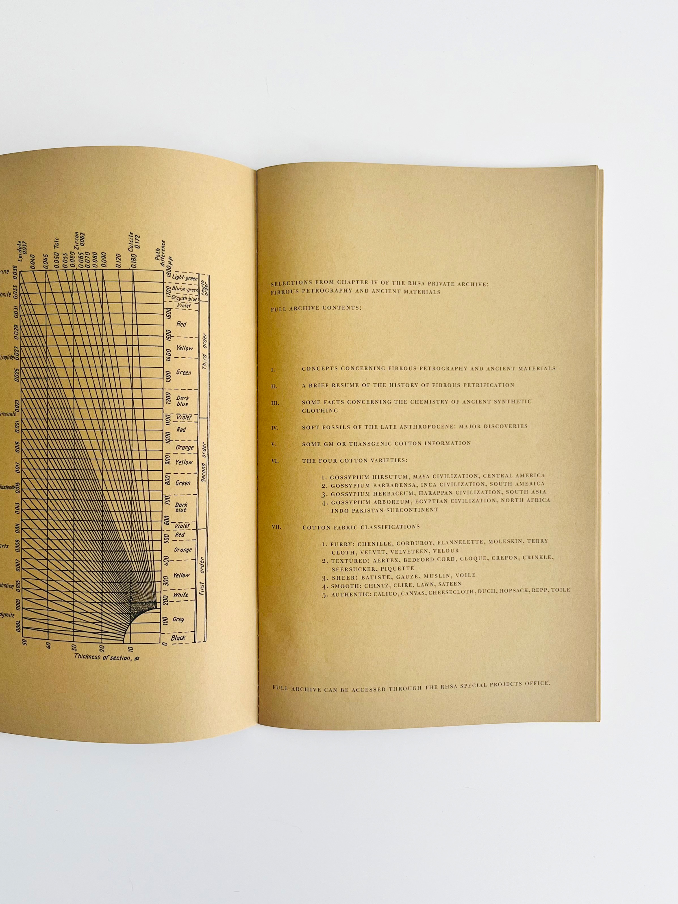

soft fossils
0.1
/intro
“More than 60 percent of fabric fibres are now synthetics, derived from fossil fuels, so if and when our clothing ends up in a landfill, it will not decay.
Future archaeologists may look at landfills taken over by nature and discover evidence of Zara.”
- Dana Thomas, Fashionopolis


soft fossils
0.2
/intro
Due to the overwhelming volume and pace at which synthetic clothing is now being produced and the harm this process has caused to our environment, much of our clothing will remain on the planet long after us.

soft fossils
0.3
/intro
Soft Fossils is a collection of work that investigates the present circumstances that have allowed for the environmentally catastrophic over-production of clothing.
This collection of artifacts invites viewers to consider clothing production through simultaneously dystopian and anthropological contexts.

soft fossils
1.1
/scale (artifact)
The white t-shirt is a symbol of mass reproduction, of limitless customization and blank anonymity.

soft fossils
1.2
/scale (process)
Using 14 thrifted t-shirts as a recycled yarn, I created a sheepskin-like rug with an oxford punch needle, a pair of scissors, a few yards of monk’s cloth and over 32 hours of my own time. This life-sized imitation of an animal pelt gives a singular embodiment to the undefinable mass of over-produced textiles occupying space in the world today.
The unremarkable and technological can be made organic and novel through labour.

soft fossils
1.3
/scale (artifact)

soft fossils
1.4
/scale (artifact)

soft fossils
2.1
/chemical (artifact)
The majority of clothing being manufactured today is produced using synthetic materials derived from fossil fuels that will not decompose.

soft fossils
2.2
/chemical (process, prototype)
To focus on the chemical makeup of fast fashion, I created fossil-like artifacts from clothing tags that feature typographic evidence of their chemical makeup.
These artifacts were made using a chemical process of encasing found items sourced from my own wardrobe within epoxy resin.
soft fossils
2.3
/chemical (artifact)

soft fossils
3.1
/consequense (artifact)
The conceptual idea of a future archaeologist discovering evidence of fast fashion from a bygone era was taken directly from Dana Thomas’
words in Fashionopolis. I used them as a window into a recognizable visual language: the language of museums and science, of practical
discovery and classification.

soft fossils
3.2
/consequense (process)
Instead of considering fast fashion as a moral and behavioral issue wherein individuals are primarily responsible, this entryway considers first the society that creates and sustains its function.
I arranged articles of my own clothing to resemble the organic shapes of fossilized rock formations, and old botanical journals provided the inspiration for the layout.

soft fossils
3.3
/consequense (artifact)
Scientific language, tables & diagrams were scanned from an old scientific study titled General Petrography. The shapes and patterns
found in these elements echo the shapes of the fossils, creating a visual relationship between them that reinforces the context of scientific study and documentation.
soft fossils
3.4
/consequense (artifact)